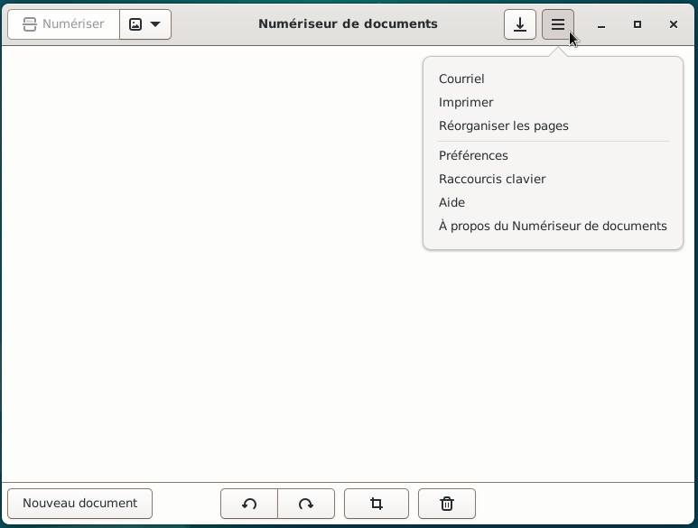
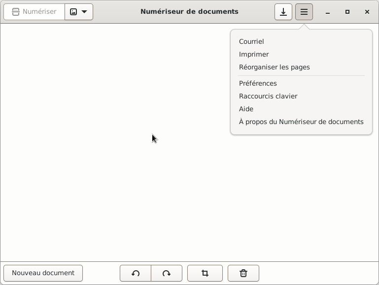

&
Imprimer et d'autres options : Simple-scan
Si besoin, se reporter au chapitre Scanner > Scanner avec l'application Numériseur de documents (Simple-scan)


Si besoin, se rendre au chapitre Imprimante > Paramètres d'impressions avec la boite de dialogue

Si besoin, se rendre au chapitre Scanner > Scanner avec l'application Numériseur de documents (Simple-scan)

Informations sur le logiciel libre et Merci.
Marques déposées :
Ce site ne fait pas partie de Debian, n'est pas produit par le projet
Debian, ni approuvé par le projet Debian.
Ce site n'est pas affilié à Debian. Debian est une marque déposée appartenant
à Software in the Public Interest, Inc.
Contribuer :
Ce site ne fait pas partie de XFCE, n'est pas produit par le projet
XFCE, ni approuvé par le projet XFCE.
Ce site n'est pas affilié à XFCE.
Ce site est juste réalisé par un passionné.